App-ஐ எப்படி பயன்படுத்துவது
Login முதல் badges வரை, படத்தோட படிப்படியா. சிவப்பு எண் இருக்கிற இடத்தை தட்டுங்க.
App-ஐ திறங்க →தினமும் 3 வேலை மட்டும்
- App திறங்க → Continue today's habits.
- ஒவ்வொரு habit-க்கும் ✓ Done அல்லது ✗ Not done (அல்லது Quick tick).
- இரவு 2 நிமிஷம் Journal.
- 1Login பண்ணுங்க
- 2Email code போடுங்க
- 3App மாதிரி phone-ல வைங்க
- 4Notifications Allow பண்ணுங்க
- 5Home - ஒரே பார்வையில இன்றைக்கு
- 6Track - tracker தேர்வு செய்யுங்க
- 7Tracker உள்ளே
- 8Habit tick பண்ணுங்க
- 9Quick tick - ஒண்ணொண்ணா
- 10Notes · Audio · Ask
- 11To-do பட்டியல்
- 12Leaderboard
- 13Journal - இரவு 2 நிமிஷம்
- 14Sessions & கேள்விகள்
- 15Progress & Badges
- 16Profile
Login பண்ணுங்க
Coach WhatsApp-ல அனுப்பின link-ஐ phone-ல திறங்க. மூணு வழியில எதாவது ஒண்ணு போதும்.
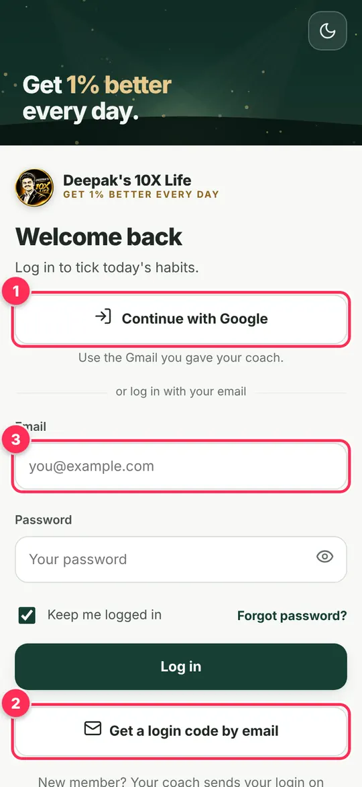
- 1Continue with Google - coach-கிட்ட கொடுத்த Gmail-ஐ தேர்வு செய்யுங்க. Password வேண்டாம், உடனே உள்ள போயிடலாம். (எளிய வழி)
- 2Gmail இல்லையா? Get a login code by email தட்டுங்க - உங்க email-க்கு 6 இலக்க code வரும்.
- 3அல்லது coach அனுப்பின email, password போட்டு Log in. முதல் தடவை உங்க சொந்த password வைக்க சொல்லும்.
Email code போடுங்க
Email போட்டு Send code to my email தட்டினா ஒரு நிமிஷத்துல code வரும்.
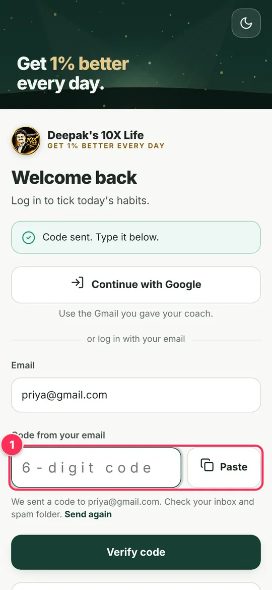
- 1Email-ல வந்த 6 இலக்க code-ஐ copy பண்ணி Paste தட்டுங்க. 6 இலக்கமும் வந்ததும் தானா login ஆகும்.
App மாதிரி phone-ல வைங்க
Play Store தேவையில்ல. ஒரு தடவை இப்படி பண்ணினா home screen-ல 10X icon வரும், தட்டினா நேரா app திறக்கும்.
- ★Android (Chrome): மேல வலது பக்க ⋮ மூணு புள்ளி → Add to Home screen அல்லது Install app → Install.
- ★iPhone (Safari): கீழ Share பட்டன் (□↑) → Add to Home Screen → Add.
Notifications Allow பண்ணுங்க
முதல் தடவை app திறக்கும்போது இது கேட்கும்.
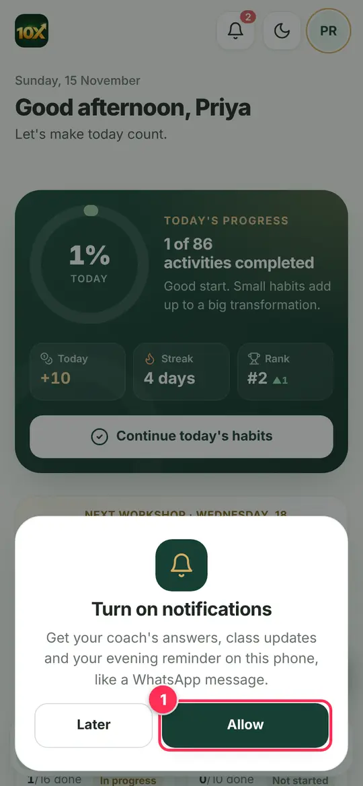
- 1Allow தட்டுங்க. Coach பதில், class update, இரவு நினைவூட்டல் எல்லாம் WhatsApp மாதிரி phone-க்கு வரும். Later தட்டினா நாளைக்கு மறுபடி கேட்கும்.
Home - ஒரே பார்வையில இன்றைக்கு
App திறந்ததும் வர்ற முதல் screen.
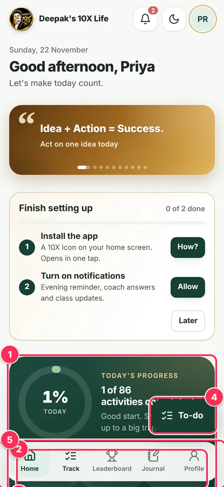
- 1இன்றைய progress - இன்னைக்கு எத்தனை habits முடிஞ்சது.
- 2Today இன்றைய points · Streak தொடர்ந்து எத்தனை நாள் · Rank உங்க இடம்.
- 3Continue today's habits - நேரா tick பண்ண போகலாம்.
- 4To-do - உங்க சொந்த வேலை பட்டியல்.
- 5கீழ menu: Home · Track · Leaderboard · Journal · Profile.
Track - tracker தேர்வு செய்யுங்க
Coach திறந்த tracker-கள் எல்லாம் இங்க இருக்கும்.
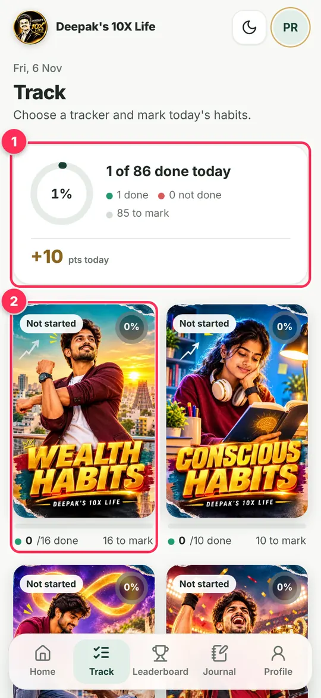
- 1இன்னைக்கு எல்லா tracker-லயும் சேர்த்து எத்தனை முடிஞ்சது, எத்தனை பாக்கி.
- 2ஒரு tracker-ஐ தட்டினா அதோட habits திறக்கும். 🔒 பூட்டு இருந்தா, அந்த class முடிஞ்சதும் coach திறப்பார்.
Tracker உள்ளே
மேல tracker பெயர்கள் - தட்டி அடுத்த tracker-க்கு மாறலாம்.
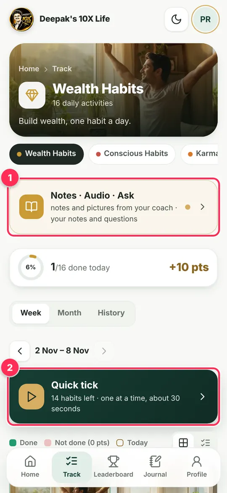
- 1Notes · Audio · Ask - coach notes, audio, video; உங்க அனுபவம்; கேள்வி கேட்க.
- 2Quick tick - ஒவ்வொரு habit-ஆ வேகமா tick பண்ண (சுமார் 30 விநாடி).
Habit tick பண்ணுங்க
ஒவ்வொரு habit card-லயும் இரண்டு பட்டன். தட்டினதும் சின்ன சத்தமும் animation-உம் வரும்.
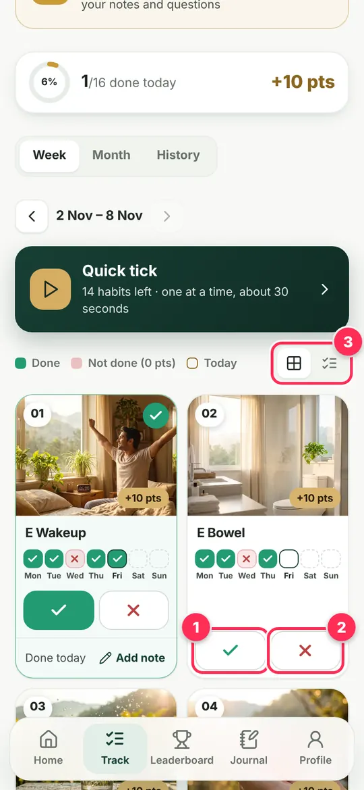
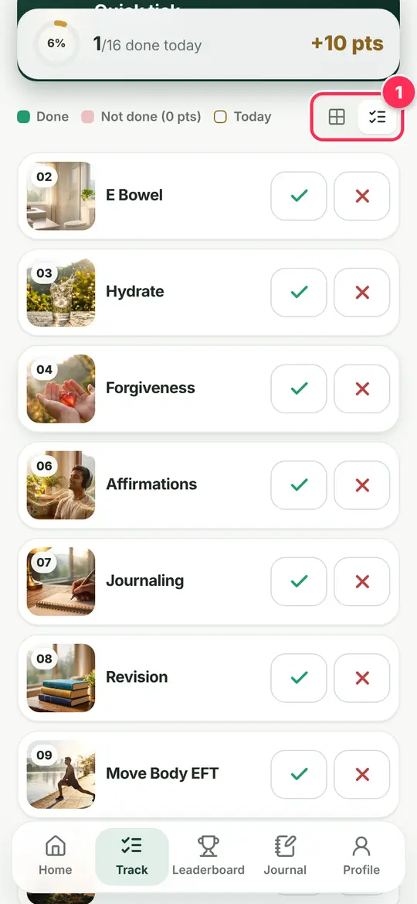
- 1✓ Done - செய்தேன். +10 points.
- 2✗ Not done - செய்யல. 0 points, மைனஸ் கிடையாது. உண்மையா போடுங்க.
- 3Card view / List view மாற்ற. List-ல எல்லாம் ஒரே பட்டியலா வரும், வேகமா முடிக்கலாம்.
Quick tick - ஒண்ணொண்ணா
ஒரு நேரத்துல ஒரு habit மட்டும் பெருசா வரும். யோசிக்காம வேகமா முடிக்க இது தான் எளிது.
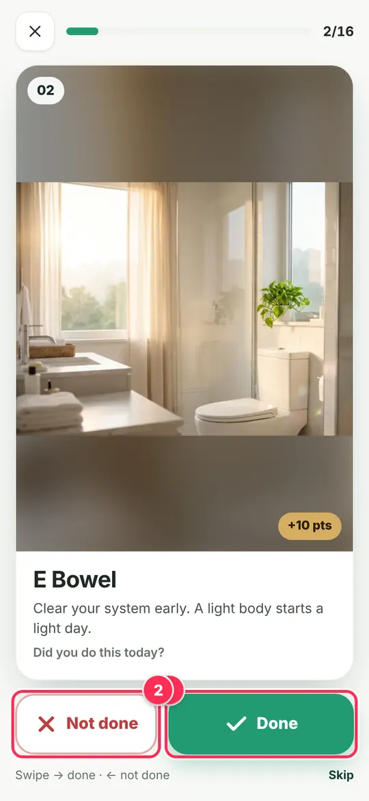
- 1Done தட்டுங்க, அல்லது படத்தை வலது பக்கம் swipe பண்ணுங்க →
- 2Not done தட்டுங்க, அல்லது இடது பக்கம் swipe ←
- ★Skip - அப்புறம் பண்ண. கடைசியில மொத்த summary வரும்.
Notes · Audio · Ask
ஒவ்வொரு tracker-க்கும் ஒரே இடம்.
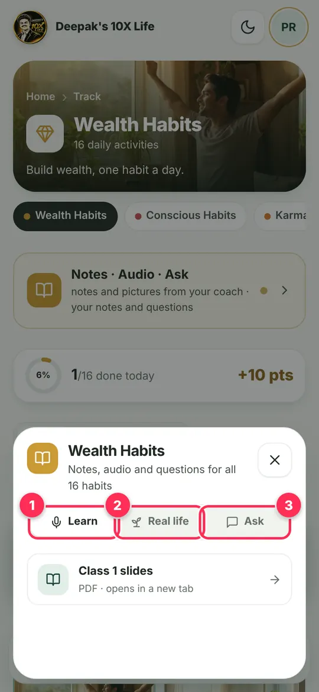
- 1Learn - coach போட்ட notes, படங்கள், audio, video.
- 2Real life - இந்த habit-ஐ வாழ்க்கையில எப்படி செஞ்சீங்கன்னு எழுதுங்க / படம் போடுங்க.
- 3Ask - coach-கிட்ட கேள்வி. பதில் வந்ததும் notification வரும்.
To-do பட்டியல்
Home-ல To-do பட்டன் தட்டுங்க. உங்களுக்கு மட்டும் தான் தெரியும்.
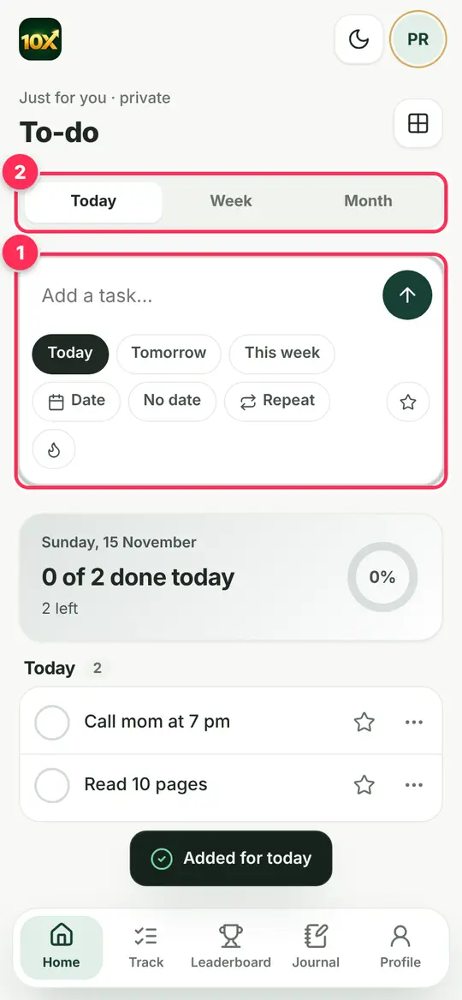
- 1வேலையை எழுதி ↑ தட்டுங்க. Today / Tomorrow / Date / Repeat (தினமும், வாரம்) / ⭐ முக்கியம் தேர்வு செய்யலாம்.
- 2Today · Week · Month - நாள், வாரம், மாதம் வாரியா பார்க்க. முடிச்சதும் வட்டத்தை தட்டுங்க.
Leaderboard
எல்லாரும் tick பண்ண பண்ண உடனே மாறும்.
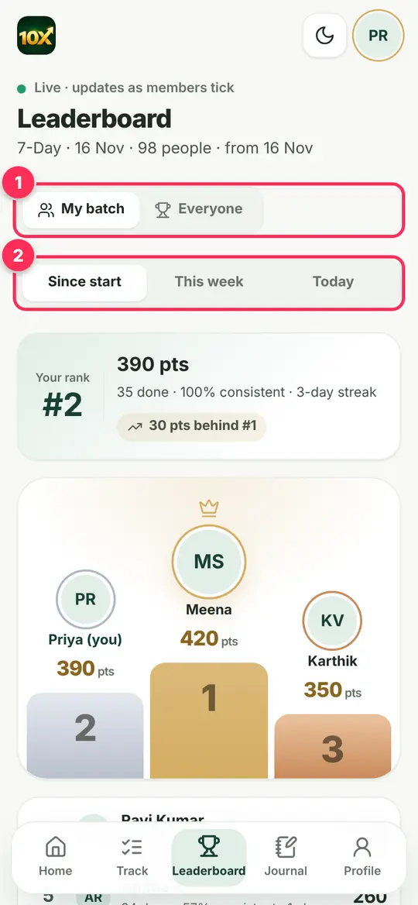
- 1My batch - உங்க batch மட்டும் · Everyone - எல்லாரும்.
- 2Since start · This week · Today.
- ★ஒரே points-ஆ இருந்தா - யார் தினமும் தவறாம பண்றாங்களோ (consistency) அவங்க முன்னாடி.
Journal - இரவு 2 நிமிஷம்
ஒவ்வொரு இரவும் 5 சின்ன கேள்வி. நீங்க share பண்ணினா மட்டும் coach பார்ப்பார்.
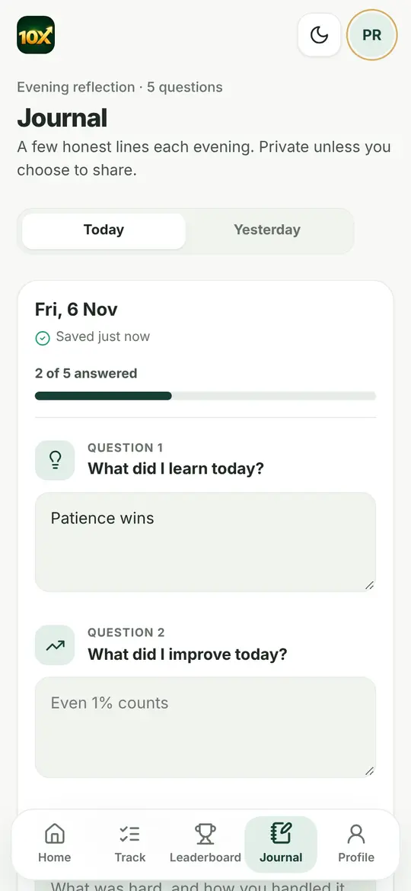
Sessions & கேள்விகள்
Profile → Sessions அல்லது Home → Sessions.
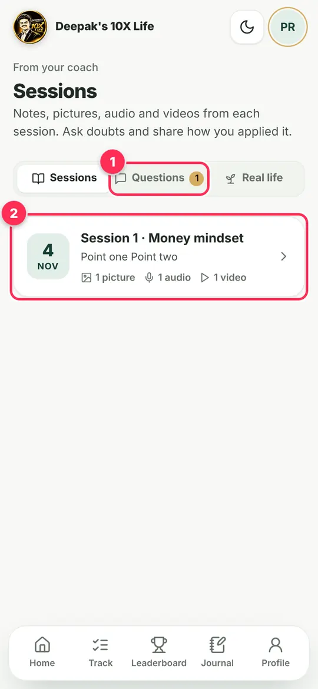
- 1Questions - நீங்க கேட்ட கேள்வியும் coach பதிலும்.
- 2ஒவ்வொரு class-ஓட notes, படம், audio, video.
Progress & Badges
Profile → My progress. ஒவ்வொரு tracker-லயும் எவ்வளவு பண்ணீங்க, என்ன badges கிடைச்சது.
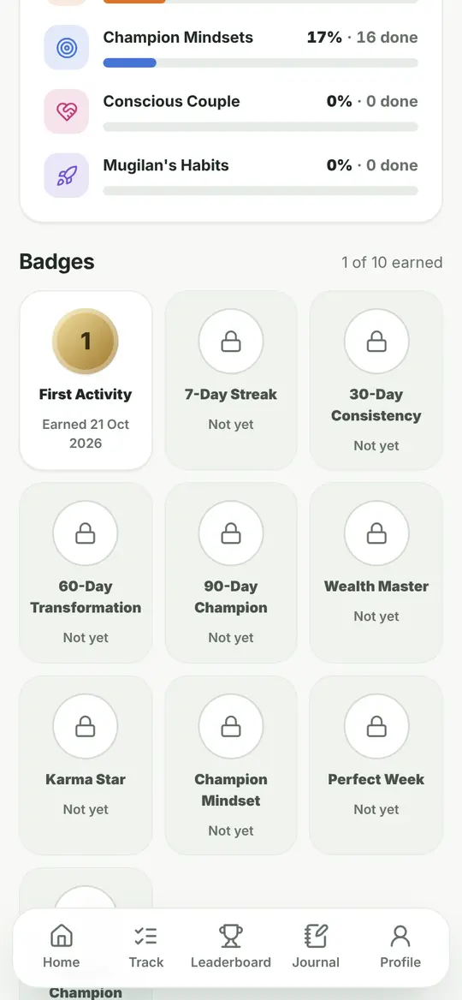
- ★7 நாள் தொடர்ந்து → 7-Day Streak · 30 → 30-Day Consistency · 60 → 60-Day Transformation · 90 → 90-Day Champion.
- ★ஒரு நாள் streak-ல சேர, அன்னைக்கு குறைஞ்சது ஒரு habit Done ஆகணும்.
Profile
உங்க படம், விவரம், settings.
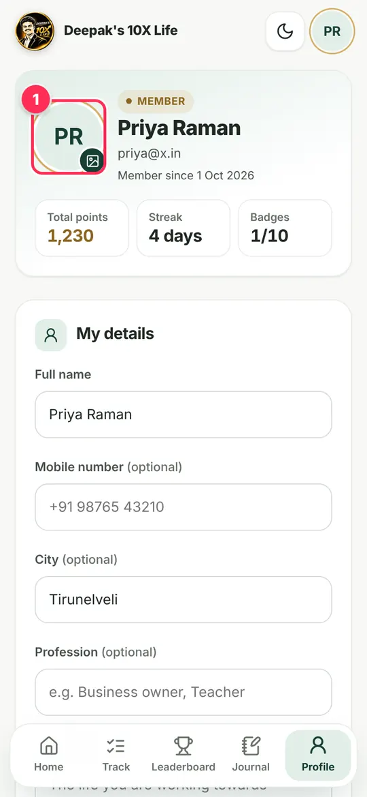
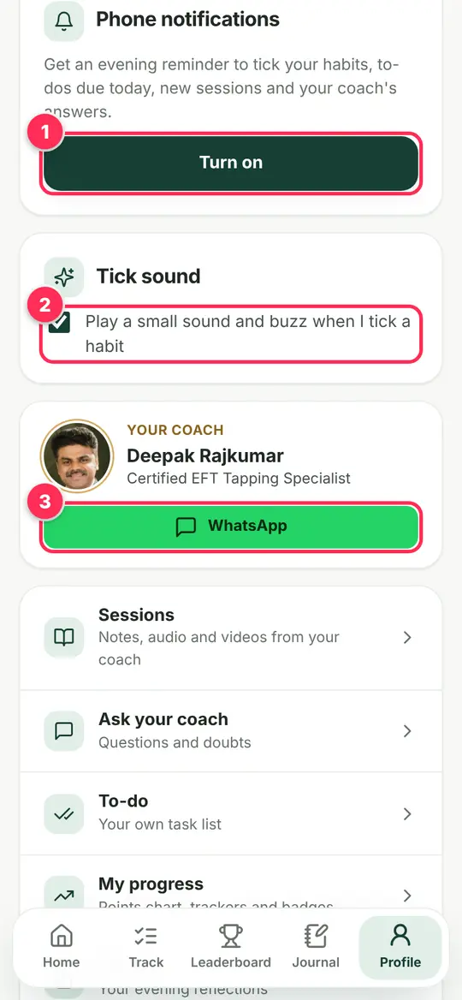
- 1படத்தை தட்டி photo போடுங்க. விரலால நகர்த்தி, pinch பண்ணி முகம் பெருசா வைக்கலாம்.
- 2Tick sound - சத்தம் வேண்டாம்னா எடுத்துடலாம்.
- 3Coach-க்கு நேரா WhatsApp.
சிவப்பு எண் ① ② ③ = படத்தில் தட்ட வேண்டிய இடம்.
படங்கள் மாதிரி கணக்கு (demo) வைத்து எடுத்தவை; உங்க app-ல உங்க பெயர், உங்க points வரும்.
Privacy